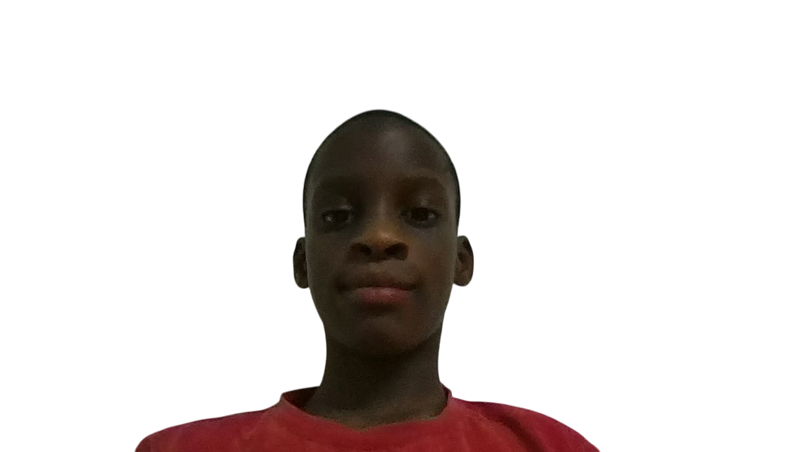

Welcome to my profile!
Honour Chimdiebube Uzochukwu
🧑‍🎓 I am a Student
🫠I study at Alashbal International School
🂠My birthday is December 4th
🔟 I am 10 years
🔵 I don't have a favourite colour.
🮠I like the ONLINE game "Dojo Islands" because it is fun.
💻 I love coding
📖 I hope to learn how to use Javascript.
👷‍♂️ I want to build a website one day.
😠I love to play with my friends and family. I also like to play video games and watch cartoons.
🵠My favourite song is "Vidrado Em Você" by DJ Guuga and MC Livinho.
📚 My favourite subject is Mathematics.
🌠My location is... somewhere on Earth!
🇳🇬 My Nationality is Nigerian.
🧑‍🤝‍🧑 My Ethnicity is Igbo.
🍽️ My favourite food is Jollof Rice.
🶠My favourite animal is a Dog.
🀠My favourite sport is Basketball.
📺 My favourite TV show is "The Bad Guys".
🧒 My favourite holiday is Childrens Day.
💀 My favourite Emoji is the 💀 (skull) emoji.
💻🮠My favourite VIDEO GAME is "Dragon City".
🇮🇹 😂 My favourite Italian Brainrot Character is "Tung Tung Tung Sahur"
👨‍💻 When I grow up, I want to be a Coder.
🍎 My favourite fruits are ... all of them!
🌽 My favourite vegetable is Corn.